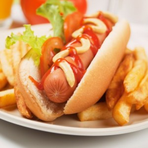

Bánh hamburger (đọc là hăm-bơ-gơ hay hem-bơ-gơ, phát âm tiếng Anh là /ˈhæmbɜrɡər/) là một loại thức ăn bao gồm bánh mì kẹp có thịt xay (thường là thịt bò) ở giữa. Miếng thịt có thể đã được nướng, chiên, hay hun khói và thường được ăn với một số gia vị bên trong cùng với 2 miếng bánh mì hình tròn. Bánh thường được thưởng thức với khoai tây chiên.

Hamburger được coi là món ăn tiêu biểu của người Hoa Kỳ. Họ thường nướng bánh hamburger trong các bữa tiệc ngoài trời trên vỉ barbecue. Hamburger thường được nướng ở sau vườn để cả gia đình cùng ăn. Thịt hamburger thường được mua sống và có thể có vi khuẩn gây hại, cho nên cần phải được nấu chín kỹ lưỡng.
Nhiều nhà hàng fast food dựa vào hamburger để bán. Dãy nhà hàng McDonald's bán một loại hamburger có tên là Big Mac, được bán chạy nhất thế giới, đồng thời được khách hàng ưa thích nhất. Các dãy nhà hàng khác như Burger King, Whataburger, Carl's Jr., Wendy's, Jack-in-the-Box, và Sony cũng dựa vào món hamburger. Fuddruckers là một dãy nhà hàng chuyên bán hamburger "thượng hạng".
Hot dog (đọc "hót đoóc") là một loại đồ ăn nhanh của Mỹ. Đó là bánh mỳ (hot dog bun) kẹp xúc xích, thường có thêm mù tạt, nước sốt cà chua, hành, mayonnaise, gia vị có thể có hoặc không dưa cải Đức (sauerkraut). Từ "dog" đã được sử dụng như từ đồng nghĩa với xúc xích từ năm 1884 và các cáo buộc cho rằng nhà sản xuất xúc xích sử dụng thịt chó đã có ít nhất từ năm 1845[1]. Vào đầu thế kỷ 20, ở Đức, việc tiêu thụ thịt chó là bình thường[2]. Những nghi ngờ xúc xích có chứa thịt chó "đôi khi chính xác".[3].
